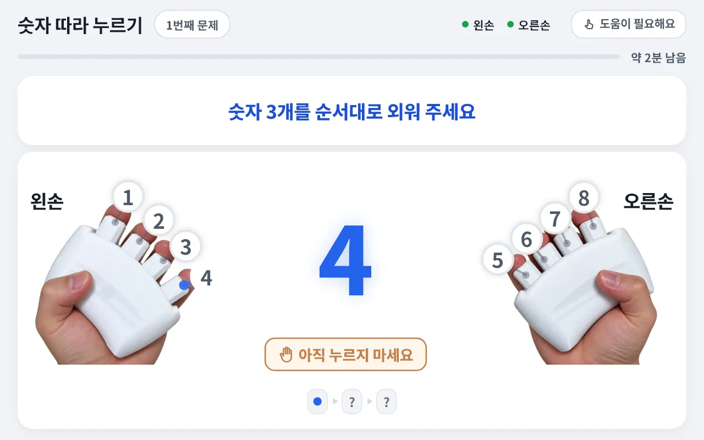

A new training experience, one fingertip at a time
Rehaptic is a digital training device that links a hand-operated device with app content, so people can experience hand movement and memory and rhythm tasks together.
Screens shown in Korean. They are examples based on actual screens of an app in development; product specifications and screens may change.
A haptic grip where each finger presses on its own
Following guidance from the screen, sound and vibration, users move their fingers and take part in tasks that involve remembering or reacting to a beat. We aim to combine a variety of activities with performance records so that repeated exercise stays engaging.
Independent levers and vibration
Four levers per hand are pressed independently, and vibration tells you which finger.
Sight, hearing and touch together
Guidance on the screen, in sound and by vibration carries the same signal.
A left-and-right pair
A pair of left and right grips connects to the app as numbers 1 to 8.
The independent vibration and input structure is the subject of domestic patent applications (3 applications, not yet granted).
Rehaptic introduction video (app screens in Korean)
Press, match, remember
Press the eight buttons on the grips as the screen tells you.
Press the number lit in blue and keep holding for the set time. Starting with one finger and working up to all four fingers of both hands, in a variety of shapes.
A circle falls from above in time with the music; press that number when it fills the ring. Play at a slower or faster tempo, and as you do well, instruments are added to the song one by one.
Numbers appear one at a time. Remember them in order and press them in the same order. It's okay to get one wrong: we show the correct answer and move on to the next number.

Screens shown in Korean. They are examples based on actual screens of an app in development; product specifications and screens may change.
All contents
See the contents Rehaptic offers, together with the areas each one covers.
For centers and home
Hand exercise
Press the finger of the lit number and keep holding for a set time. Sustain · Separation · Coordination
Rhythm play
Press falling circles in time with the background music. Beat · Coordination · Sustain
Follow the Numbers
Watch numbers, remember them and press them in the same order. Sequence · Separation
Mole catching
A reaction game in which you press the lit finger to catch the mole that pops up.
One finger at a time
Raise only the target bar out of four and keep the others still. Separation · Control
Depth matching
Match the height of the band on the screen bar and stay at the set depth. Control · Sustain
Follow the beat
An activity that goes deeper into the beat. Beat
Seasonal and regional theme packs
Content bundles themed on seasons and regions.
For home
Sensor games
Control games by holding and moving a new grip that contains a gyro sensor.
Finger grip-strength exercise
Enjoy games while also exercising the grip of your fingers.
Rehaptic is a product planned for launch, and its contents and schedule may change. The meaning of each area and how it is measured are on the technology page. We make no claims of efficacy or therapeutic effect.
The service differs depending on where it is used
Rehaptic will be offered in versions for centers and for home.
For centers
Planned launch: first half of 2027
Used at
Welfare centers · senior centers · day and night care centers · care facilities
Package
Haptic grips + tablet app + admin web
How it's used
Staff run the program, and records are managed in the admin web